We had a good breakfast (3 course!), watched a chipmunk outside, and headed back to our room. This was still being cleaned and so we went for a walk around the grounds which was most pleasant.
We decided to head off to Burlington, with the thought of kayaking. Burlington seems to be a lovely city. We walked around and found an Old Navy store - a store we'd spent some time in in San Francisco. After a look around the shops we walked to the edge of Lake Champlain - a huge body of water. The nearby kayak rental places are only open at weekends now. Only when driving out of Burlington did we see an open one.
Our next stop was at the Ben and Jerry's ice cream factory near Waterbury. Here you can buy ice cream (obvious really!) and take a tour of the factory. We bought tour tickets and then spent a little time looking at the gift shop before the cowbell rang for our tour, We started with a short film about the history, then a view over the factory, and finally a taste of a couple of flavours. We weren't quite ice-creamed out yet and so had a full size one each. Just as we were about to leave we caught sight of an interesting sign - the "flavour graveyard". Here there are headstones to flavours that didn't stand the test of time.
We decided to take a drive into Stowe, but didn't stop as there seemed to be a huge traffic jam.
We drove back along the VT 100, a very scenic road and decided to drive down into the mountain area as we thought we should see the Green Mountains as well as the White Mountains. Our drive took longer than we'd expected and our plan of spending some time at the Inn vanished.
We got back to the Inn and decided to investigate the swimming pool - but it was dark by now, and the lighting wasn't very good, and there were no towels, so we gave up.
We had a rummage through the menus and decided to go to "The Spotted Cow" for dinner. This is the closest eatery and had an interesting menu. They had space for us and we had an okay meal - the dishes were all a bit too fussy really, too many different flavours - but it was a pretty expensive dinner.
After last nights failure to get beer at the Inn after dinner we'd picked up a couple of bottles at a Supermarket during our earlier drive around - so we drank them before retiring.
(15 images.)| 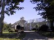
The Inn at Round Barn Farm | 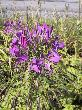
A flower |
In Burlington | 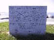
Champ! |
| 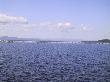
Lake Champlaign | 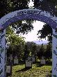
Flavour Graveyard | 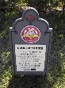
Cool Britania | 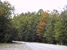
Trees by the road |
| 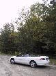
Rich and the car |
Rich in the car | 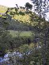
Reflections | 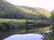
More Reflections |
| 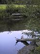
Yet more reflections | 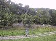
Rich wanders off | 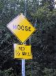
Moose!!!! |